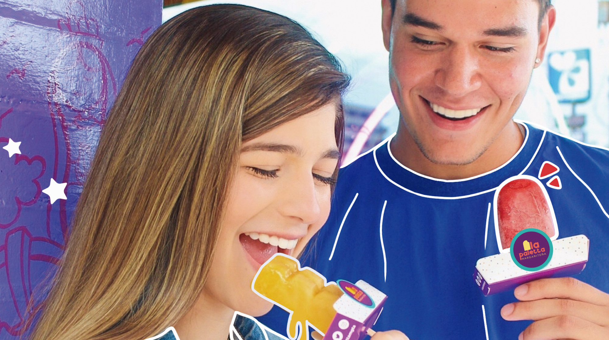

Propuesta de Valor
La Paletta Margariteña ofrece una experiencia única en helados artesanales, combinando más de 60 sabores innovadores que cautivan tanto a niños como a adultos. Con un enfoque en la calidad y creatividad, sus productos no solo destacan por su sabor, sino también por su capacidad de adaptarse a los gustos locales, utilizando ingredientes frescos y métodos artesanales en la Isla de Margarita.
Además, la marca se posiciona como un referente de alegría y tradición, expandiendo su alcance a nivel nacional e internacional gracias a su compromiso con la excelencia y el servicio al cliente.
- Experiencia única: La Paletta Margariteña ofrece una experiencia sensorial única a través de una variedad de sabores artesanales, hechos con ingredientes locales y de alta calidad, que despiertan el paladar y evocan la alegría.
- Conexión emocional: Más que un simple helado, La Paletta Margariteña se posiciona como un símbolo de felicidad, nostalgia y celebración. Al consumirla, los clientes se conectan con momentos especiales y recuerdos.
- Producto artesanal y natural: La Paletta Margariteña se destaca por ser un producto artesanal, elaborado con ingredientes naturales y sin conservantes, lo que garantiza un sabor auténtico y saludable.
- Variedad y personalización: Con más de 40 sabores disponibles, La Paletta Margariteña se adapta a todos los gustos y preferencias, ofreciendo una experiencia personalizada para cada cliente.
- Apoyo al emprendimiento local: Al consumir La Paletta Margariteña, los clientes están apoyando un emprendimiento familiar venezolano y contribuyendo al desarrollo económico local.